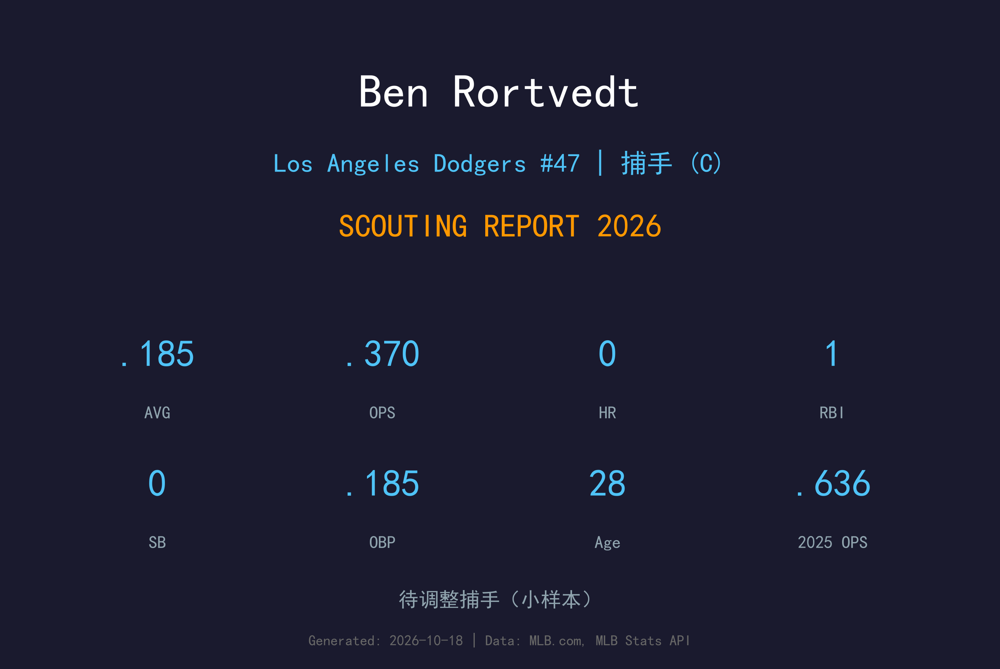
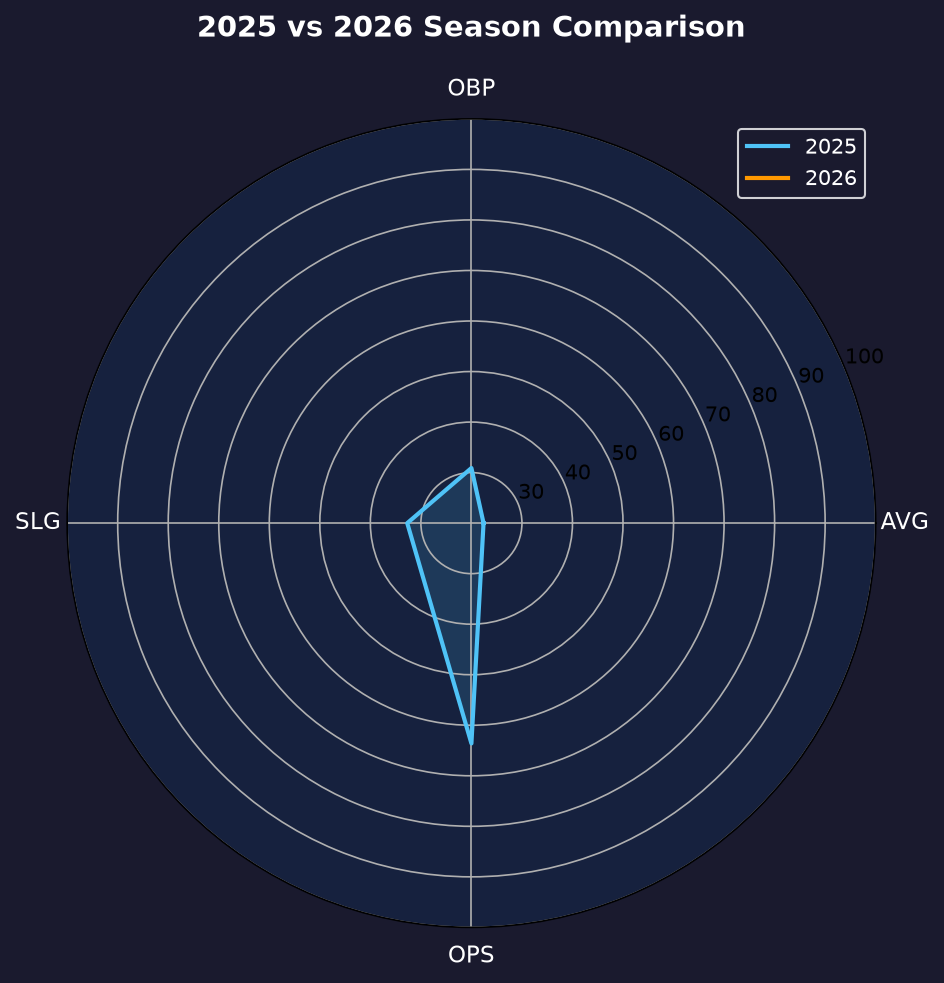
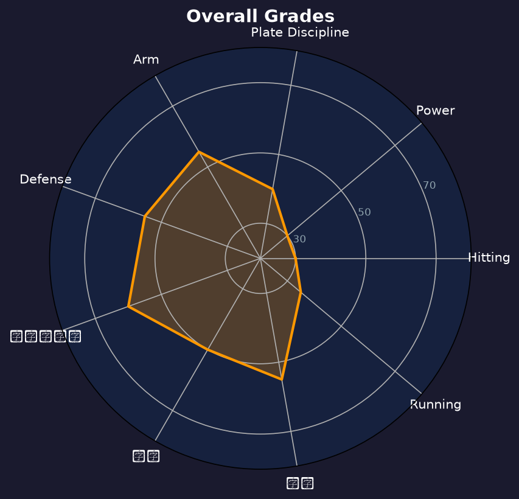

Los Angeles Dodgers #47 | 捕手 (Catcher) | 已离队（2026年10月17日成为自由球员）

Ben Rortvedt 是一名以防守与接捕技巧著称的左打捕手， offense 是其明显短板。2024 年在光芒担任主战捕手 112 场，打击率 .228/.317/.303，并被 Statcast 评为 接捕偷好球 第17名。2025-2026 年因多重伤病与交易辗转多队，2026 年8月3日才从大都会被交易回道奇。
Rortvedt 的生涯大联盟打击率仅 .189，OPS .547，几乎没有任何进攻威胁。但他的接球能力、配球经验与季后赛经历（2025 年世界大赛冠军成员）让他成为道奇想要的便宜守备型替补。
在道奇阵中，Rortvedt 的定位是第三捕手或 Smith 受伤时的紧急备胎。他不需要上场打击，只需要稳定蹲捕、阻止盗垒、做好 接捕偷好球。
来自威斯康星州 Verona Area High School，2016 年选秀第2轮（56顺位）被 Minnesota Twins 选中，被视为防守优先的捕手新秀。
2021年4月30日对 Royals 完成大联盟首秀，首打席就获得保送，并在八局敲出生涯首安与首打点。该年 39 场，打击率 .169。
2022 年因右腹斜肌与左膝半月板手术整季报销；2023 年在洋基因左肩动脉瘤手术缺席前半季，5月才回归。
112 场出赛（87 场先发），.228/.317/.303，3 轰，31 打点。Statcast 接捕偷好球 排名大联盟第17，确立防守型主战捕手地位。
虽然仅出赛 44 场、打击率 .152，但随洛杉矶道奇（2025 年季中从光芒转至道奇）获得世界大赛冠军戒指。
2026 年经历红人（DFA）、道奇（DFA）、大都会（3A Syracuse 长住）的辗转，8月3日被大都会交易回道奇，换来 RHP Chayce McDermott。回队后出赛 16 场（.185），9月1日再度被 DFA 下放，10月17日成为自由球员。

📈 上图为近三年核心数据趋势。柱状图高度代表该年度表现，便于快速比较球员状态的上升或下滑。
| 赛季 | G | AB | PA | HR | RBI | BB | SO | AVG | OBP | SLG | OPS |
|---|---|---|---|---|---|---|---|---|---|---|---|
| 2024 | 112 | 290 | 328 | 3 | 31 | 34 | 88 | .228 | .317 | .303 | .620 |
| 2025 | 44 | 112 | 125 | 1 | 10 | 11 | 34 | .152 | .236 | .205 | .441 |
| 2026 | 16 | 27 | 28 | 0 | 1 | 0 | 9 | .185 | .185 | .185 | .370 |
Rortvedt 的打击机制偏向 接触导向，但挥棒速度不快，难以产生 强劲击球 与长打。他生涯大联盟 OPS 仅 .547，AVG .189，几乎每三位打者就有一位无法上垒。他的选球不算差（生涯 BB/PA 约 9%），但三振率偏高，且打出去的球多为软弱滚地球或飞球。
2024 年是 Rortvedt 生涯最佳进攻年：112 场、.228/.317/.303、OPS .620。虽然仍低于联盟平均，但对防守型捕手已算可接受。2025 年他被下放并交易，44 场仅 .152/.236/.205。2026 年他整季辗转红人（DFA）、道奇（DFA）、大都会（3A 长住），8 月 3 日被交易回道奇后出赛 16 场、28 打席缴出 .185/.185/.185、0 保送 9 三振，9 月初再次被 DFA 下放，10 月 17 日成为自由球员。整体趋势是持续下滑，且已离开道奇组织。
Rortvedt 的核心价值在防守。2024 年 Statcast 接捕偷好球 排名大联盟第17，显示他能稳定帮投手争取好球判决。他的 阻杀传球时间 与阻杀能力也在平均以上。配球方面，他在 2023 年与 Gerrit Cole 合作时 捕手配合自责分率 仅 2.25，证明他能与王牌投手配合。
Rortvedt 的伤病史令人担忧：2022 年右腹斜肌 + 左膝半月板手术整季报销；2023 年左肩动脉瘤手术。这些都不是小伤。虽然他 2024 年能出战 112 场，但 2025-2026 年再次频繁进出伤病名单，显示身体耐用性有限。
Rortvedt 回到道奇后是明确的第三捕手/防守备胎。他可能在 Smith 轮休或面对强力左投先发时蹲捕，但进攻端不应期待任何贡献。他的价值完全建立在 接捕偷好球、阻杀与配球经验上。

Ben Rortvedt 的进攻几乎无法为球队贡献，但他的 接捕偷好球、防守与配球经验让他成为一名合格的防守型 backup catcher。道奇拿回他主要是为捕手深度与季后赛经验，不应期待任何 offense。
C+ 级 / 防守型替补捕手
Rortvedt 回到道奇后的定位非常清晰：第三捕手或紧急情况下的防守备胎。他的生涯已进入防守 specialist 阶段，28-29 岁的年龄让进攻改善几乎不可能。
2026 收官：8/3 被交易回道奇后出赛 16 场（.185、1 分打点），9/1 DFA 下放 3A，10/17 成为自由球员。
2027：以自由球员身份寻求小联盟合约 + 春训邀请，定位仍是防守型 backup catcher。
2028+：随着年龄增长，offense 更难进步，可能逐渐退出大联盟或转为教练/小联盟 mentor。
Benjamin Thomas Rortvedt 出生于威斯康星州 Madison，在 Verona Area High School 就读。高中时期他多才多艺，除了棒球还担任美式足球跑锋、线卫、踢球手与弃踢手。2016 年选秀，Minnesota Twins 在第2轮（56顺位）选中这位防守型捕手。
2021 年4月30日 Rortvedt 完成大联盟首秀，并在生涯前几场就击出首轰与首打点。然而他的进攻始终未能发展，2022 年因右腹斜肌与左膝半月板手术整季报销。2023 年他被交易至 Yankees，但赛季初因左肩动脉瘤手术缺席大半季。
2024 年他在 Tampa Bay Rays 迎来生涯最高光的一年，112 场出赛并展现 elite 接捕偷好球。2025 年季中他被交易至 Dodgers 并随队夺得世界大赛冠军。2026 年他经历红人、道奇、大都会的辗转，8 月3 日再次被交易回 Dodgers，换来 Chayce McDermott。16 场出赛后他再度被 DFA，赛季末成为自由球员——这一年是他生涯最漂泊的一年。